Disney+ Hotstar: Browsing UX Reimagined
A data-driven journey towards an intuitive, personalised, and highly scannable content details experience for India's leading streaming platform.
The Discovery Crisis
Disney+ Hotstar is the leading streaming service in India with over 300 million active users and 50 million subscribers. Recently, the platform launched a completely redesigned Disney+ experience across 80+ emerging countries.
Back in January 2020, data showed a jarring finding: 35% of people coming to Disney+ Hotstar on an average day couldn't find anything they liked to watch, dropping off without streaming a single title. This drop-off occurred despite having a humongous catalog of 7,000+ premium titles from Marvel, Star, ABC, HBO, Disney, and more.
Establishing Causation through Sampling
Deeper analysis revealed a critical correlation: 85% of people who sampled more than 5 titles ended up watching something.
"Sampling" refers to opening a content details page to read the description or watch the trailer. On dividing users based on watch behavior, we observed:
Rethinking Discovery Flow
Why weren't users sampling enough? Under the status quo flow, a user had to tap a home page thumbnail, wait for a new details page to load, evaluate it, and click back to return. This high interaction cost discouraged users from sampling.
While poster thumbnails work beautifully as visual hooks, users need more info upfront (genre, synopsis, release date) to gauge interest.
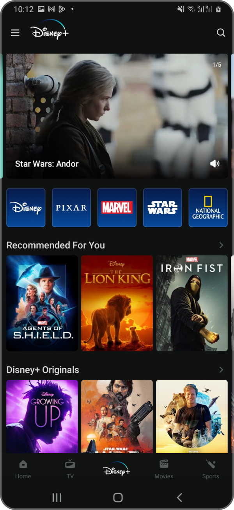
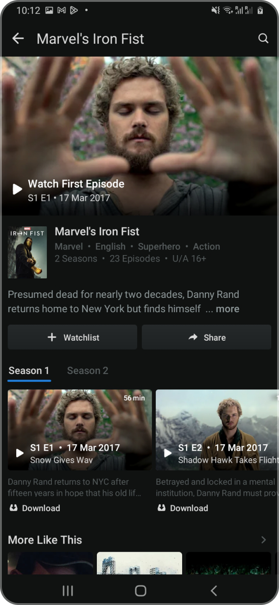
Thumbnails work beautifully in other contexts
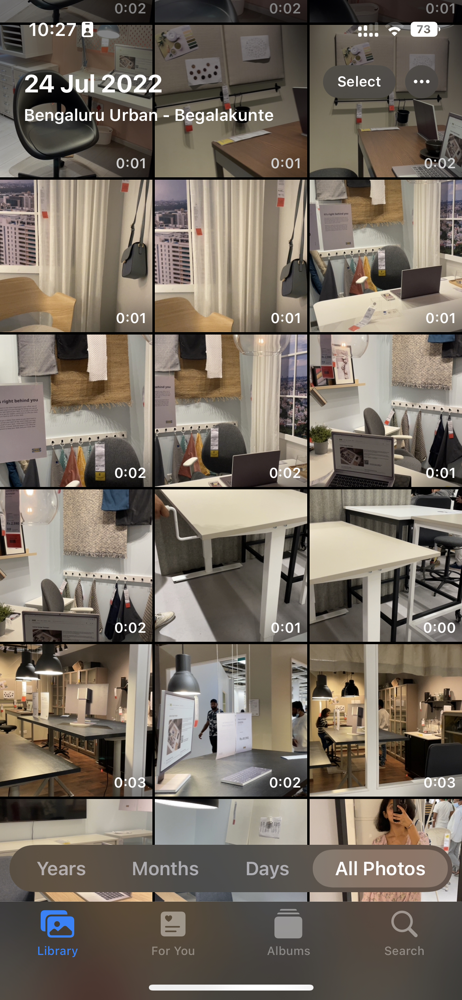
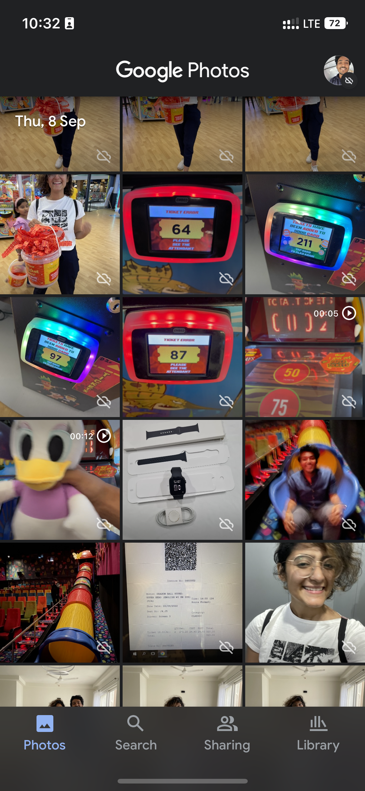
Ease of Sampling
The use cases and user expectations are drastically different across products, but the interaction lesson was clear: when browsing is low effort, people feel comfortable sampling more.
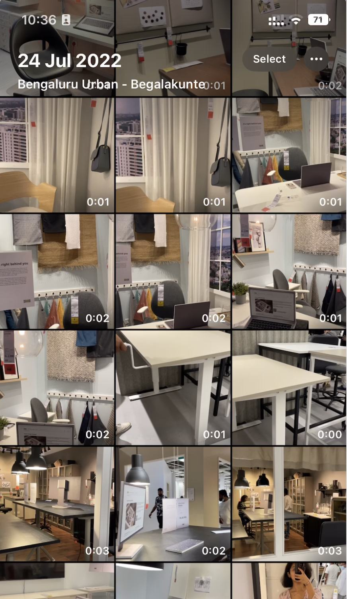
Swipe down to close
Leave the sampled title and return to the previous context instantly.
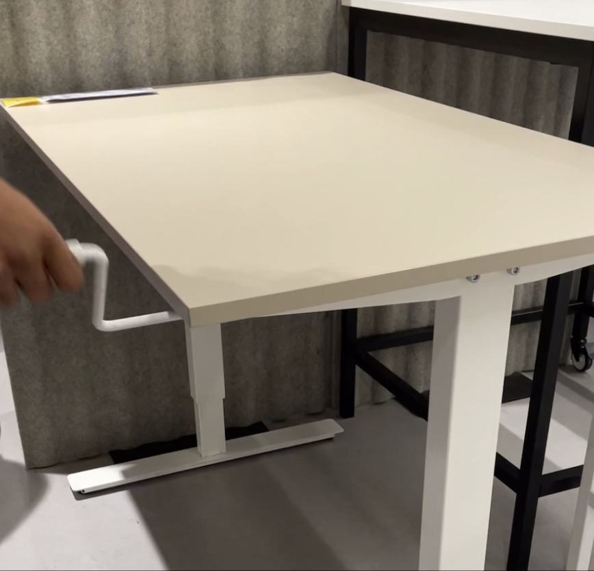
Swipe right to go next
Move through recommendations without committing to a full page load.
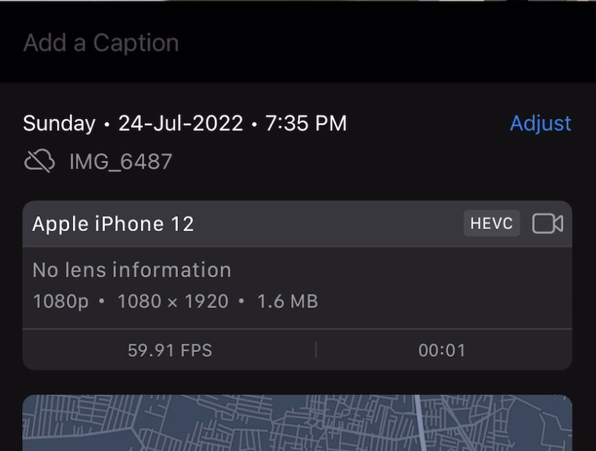
Swipe up for more info
Reveal deeper details only after interest has been established.
The Experiment
Reducing interaction cost will boost sampling.
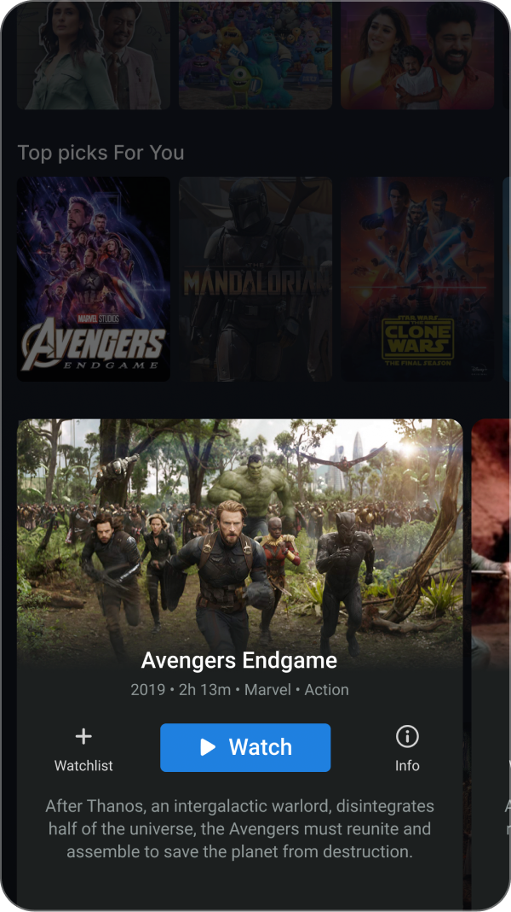
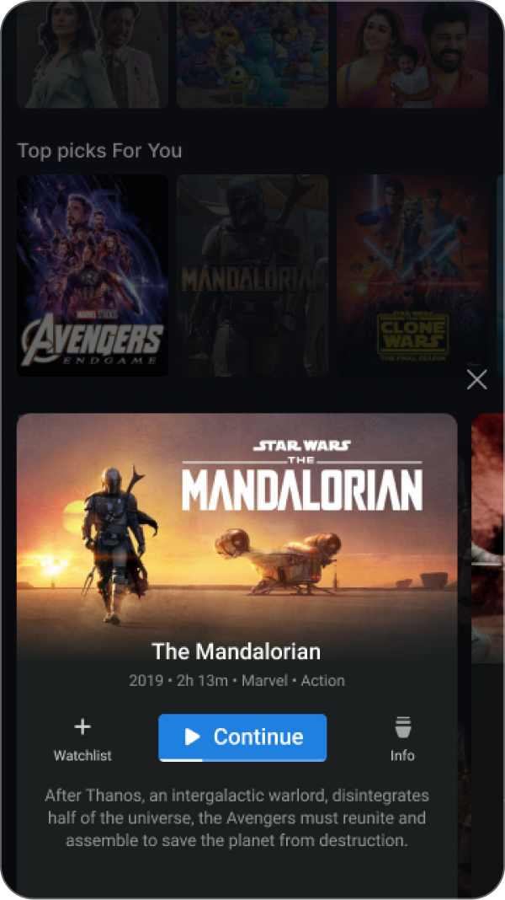
A quick swipable modal presenting key decision-making factors around content
The first experiment brought the content pitch into a lightweight sheet on top of the home feed. It gave users an autoplaying trailer, high-level information upfront, a content synopsis, a watchlist action, and an episodes entry point to the full details page.
Solving the sheet paradigm before scaling it
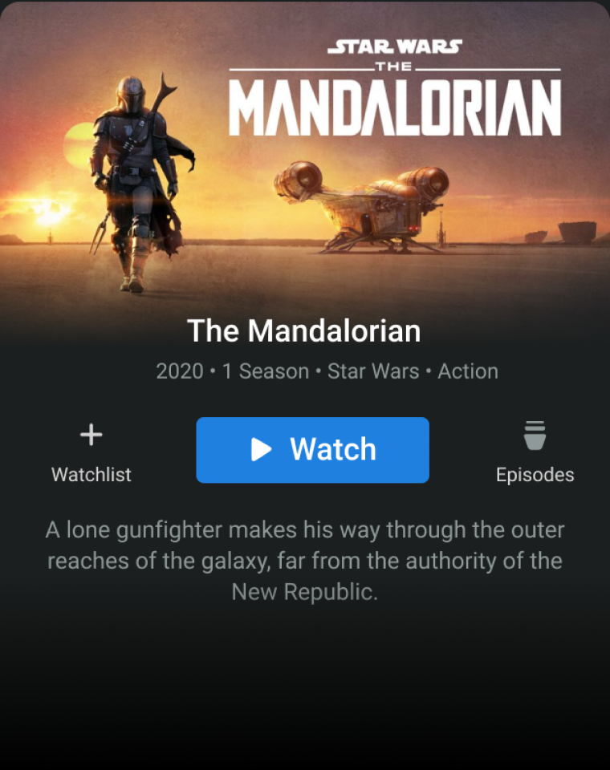
How do I go back from here?
Dismissal affordance became a key concern because the sheet sits on top of the browsing feed.
Insufficient context of the previous page
The sheet had to preserve enough of the home context to make the transition feel reversible.
Horizontally stacked buttons were not scalable
Longer text and secondary actions needed a clearer hierarchy than a row of equal buttons.
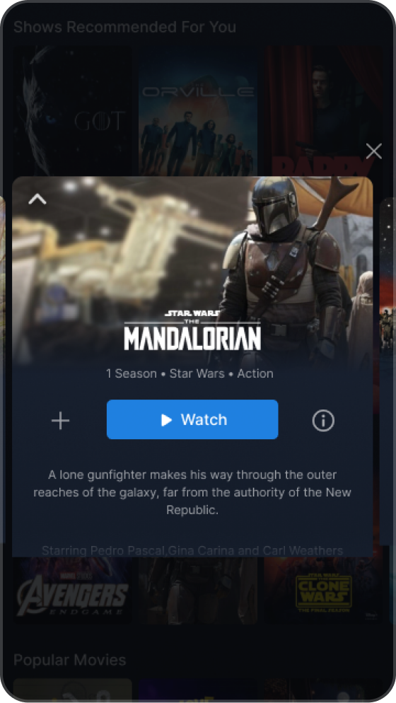
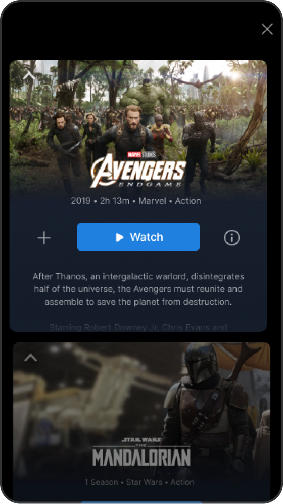
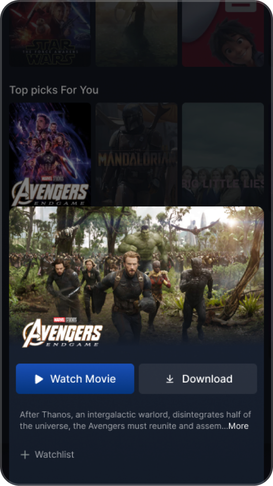
Browse Sheet 1.0 proved the sampling hypothesis
Swiping up needed to scale
5% of people who landed on the sheet swiped up to go to the full details page. Due to technical constraints this could not be built in time, but it made the next step obvious: extend the sheet paradigm to the entire page.
Shows needed more information
Distinct titles started for shows was lower by 0.7%. Shows require more commitment than movies, and the sheet did not provide enough information to start watching them confidently.
Downloads needed an upfront path
Overall downloads dropped by 3% because the upfront download button available on details was removed from the test experience.
Browsing Experience Revamp
The learnings from Browse Sheet came in at a fantastic point: we were looking to redesign the entire platform from the ground up. This gave us the opportunity to think about the complete content details experience from scratch.
By now, we had an intuitive paradigm in place to present content details. We took the learnings and went straight back to the drawing board to reimagine what goes inside it: the best pitch for a piece of content.
How might we
Present the most intuitive, inviting and personalised pitch for a particular content.
Understanding decision-making mental models
We started by talking to users and running a card-sorting exercise to understand the factors that help them decide whether to watch a movie or show.
The X Factor
Awards, nominations, popularity, friend recommendations, and other reasons a title feels worth attention.
Trailer
Immediate sensory context to evaluate tone, production value, and fit.
Genres / Studio
Familiar categories and brands help users quickly map a title to their taste.
Duration / Episodes
Users estimate whether they can complete the title based on the time they have.
Synopsis
Useful context, but only when it is compact enough to scan.
Cast
Surprisingly lower in OTT decision-making compared to more traditional channels.
Release Date
Freshness matters, but it rarely makes the decision alone.
Auditing the status quo details page
Once we understood what users expected, we dived deep into the current experience. We uncovered a set of recurring problems: the top ones shaped the redesign direction and the solution mapping that followed.
Autoplaying trailer was misunderstood for actual content.
The watch button was not clear and got lost in the noise.
Long descriptions were skipped most often.
There was no information on upcoming episode drops.
Horizontal episode navigation was hard to navigate through.
350+ explorations, 20+ user interviews, 4 months later
We had a set of problems to solve on paper, so it was time to get messy in Figma. Once we had strong directions, we brought in stakeholders across product, business, and research to make sure the final layout solved both user and business goals.
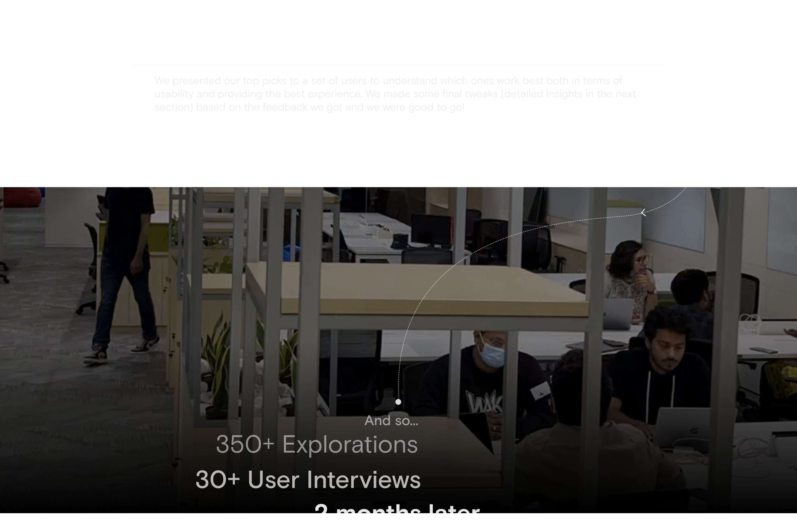
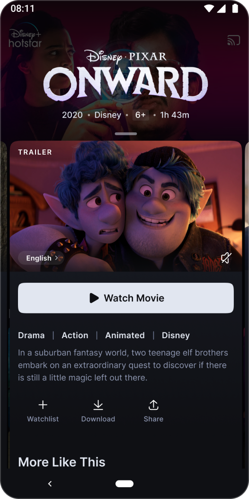
Taking our best bets back to users
We presented our top picks to users to understand which directions worked best for usability and overall experience. The feedback led to final tweaks before launch.
Dragger added for extended affordance
Because the title component floats above the sheet, some users did not immediately relate the layout to a sheet. The dragger added the extra affordance needed to make the paradigm feel familiar.
An intuitive, scannable and personalised content details experience
The final system handled movies, shows, below-the-fold details, and episode navigation while preserving the lightweight browsing paradigm that improved sampling.
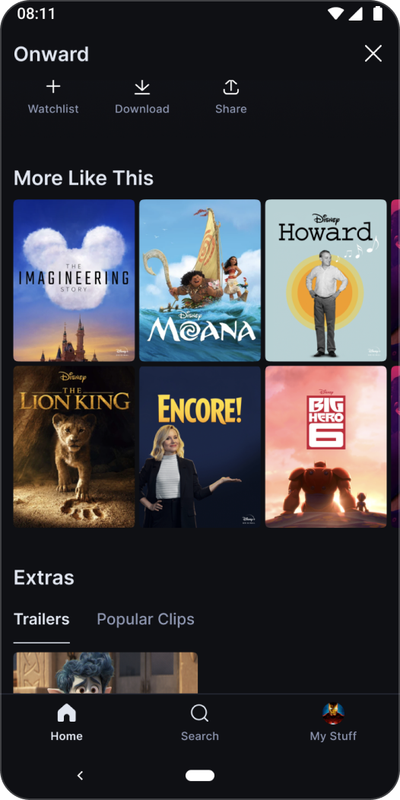
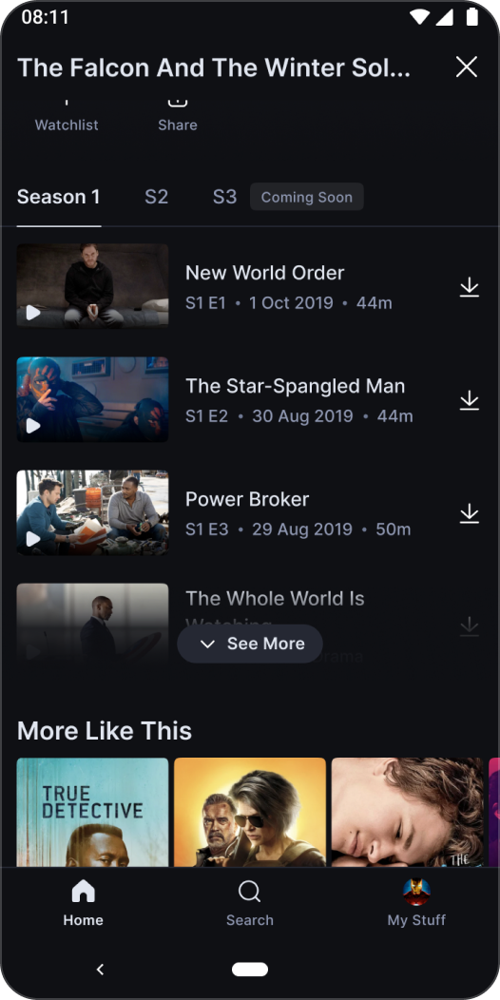
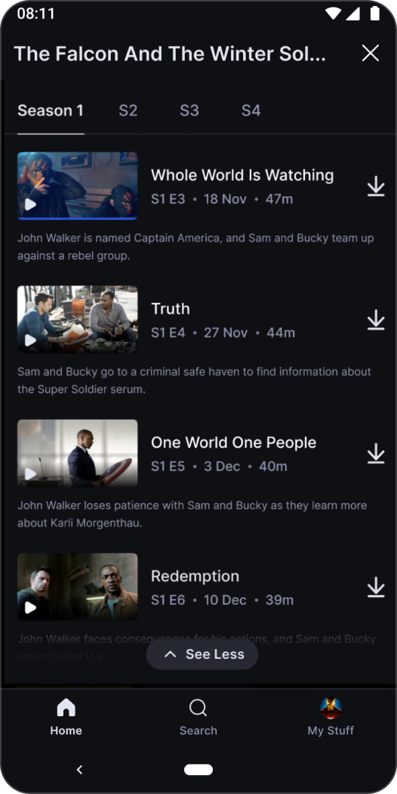
How research, discovery, alignment and validation shaped the page
Throughout the process, we took an extensive research-driven approach. Here is how everything came together to make the final page look and work the way it does.
Mapped decision-making priority to layout priority
The page structure mirrors what matters to users: trailer, title and USP, genres, duration and release date, synopsis, cast, and release-date planning for later versions.
Clear and upfront watch CTA
The watch action was made prominent so it would not get lost between trailer motion and metadata.
Dedicated status callout
Running shows gained a dedicated space for upcoming episode dates and release frequency.
Scannable synopsis and metadata
Long descriptions were supported by more consumable metadata, helping users understand content faster.
Vertical episode navigation
Episodes moved from a difficult horizontal rail to a more natural vertical list.
Configurable USP and secondary CTA
The USP section and secondary CTA were made backend-configurable so product teams could test popularity, recommendations, ratings, downloads, or plan upsells.
Dragger for sheet affordance
User feedback confirmed the need for clearer sheet affordance when the title floats above the main panel.
Browse Sheet 2.0 moved the core metrics again
The new experience launched in developing markets including South Africa and the Middle East. Improvements were tracked against Browse Sheet 1.0 in comparable markets such as Thailand and Malaysia.
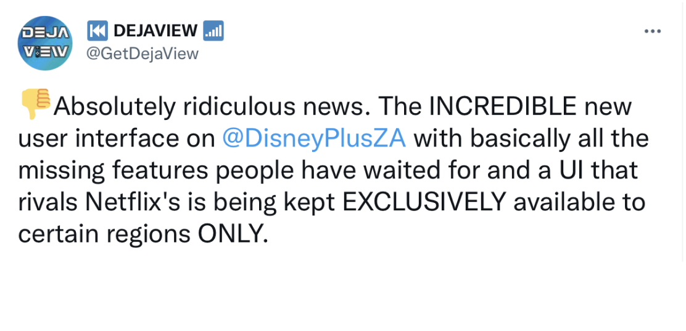
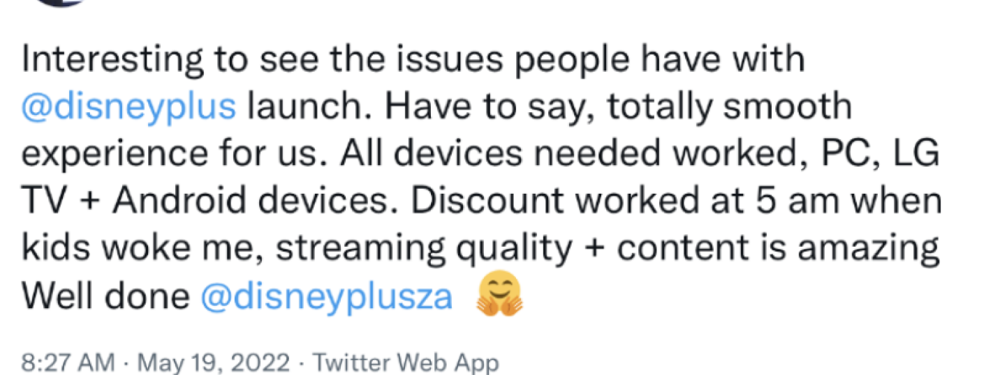
Projected lift for the largest user base
Browse Sheet 2.0 was planned for India, the largest Disney+ Hotstar market with over 300M users. Based on early launches, we projected strong improvements in title starts, homepage conversion, and watchlist saves.
Future
The introduction of Browse Sheet on Disney+ Hotstar had a dramatic impact on content browsing and watching. More titles were sampled, more items were added to watchlist, and more people found content they wanted to watch. The next step was to continue fine-tuning the experience so users always had the right information at the right moment.